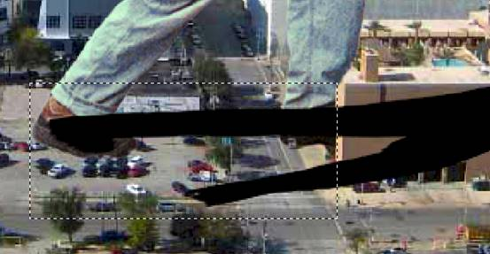

Creating a
Giant in Photopea
Skills: Magnetic Lasso, Free Transform,
Adjusting Brightness and Color, Creating a Shadow (Fill, Distort, Opacity) |
This will be a quick lesson that will give us
some good practice making selections in Photopea, then having some fun with
those selections. We are going to add an image of regular person into the image
of a city skyline so it looks like the city is being plagued by a giant. This will give you some wonderful
practice making selections and adjusting an image so that it looks like it
actually belongs in a completely different image. This is one of the most common
tasks for graphic designers, so pay attention. If you do any image editing in
the future, this will probably come up.
For this lesson, we will all work through adding
a person to another image, and then you will work independently using the tools
and techniques you learn to create a custom image.
A word of caution: This project assumes that you have at least some experience with Photopea, so
these directions will not include an overview of the layout of the software or
take the time to discuss the difference between tools and filters and other such
things. If you have never used Photopea (or Photoshop), then I recommend that
you stop now and have a look at a Photopea (or Photoshop) absolute beginner
tutorial to gain an understanding of the Photopea workspace. Then you can return
here and keep working. If these instructions refer to something that you are
unfamiliar with and do not understand how it works, it is your responsibility to
look further at the issue to figure it out. Take pride in your work and attempt
to solve your own problems - you will enjoy this process much more if you are
doing the work yourself.
Before we begin, let me address the question
most of you were probably thinking of when I explained what this project
involved: 'Huh?' You are right in thinking that creating a giant is not exactly
the most useful skill in the world. Still, it has come in handy for others in
the past. Consider these image...

This is an advertisement for
the Yellow Pages (an ancient book - yes, made out of paper - that contained the
phone number and address of every business in the city) from the 1950's. This
was an effective ad to drive home the idea of the power and usefullness of the
product. Ads like this still appear today...

These are advertisements for
Tamiflu - the first was used in magazines and on television and the second is
their webpage. Here are few more examples...

These are advertisements for
the fashion designer Maurice Malone. Two more...
These are advertisements for the FIBA Basketball World Championship in
2010.
All of these advertisements are meant to get your attention by
juxtaposing large individuals in common environments, and they work. But being
able to pull this graphic trickery off is not limited to creating mass marketing
campaigns. Consider the following images...


These images were just
created for fun (some of them were entries in Photoshop image editing contests -
can you tell which ones?). This is what we will be shooting for with our custom
images - something that is not only fun, but will show off our photo editing
skills.
Let's get started by
creating a folder on our device to save the images we will be using.
- Create a folder on your device named GIANT - you will save all work for
this project in that folder
We now need to save the background image.
- Click the image below to open the full sized image in a new browser
tab...

Can you identify the city?
- Right-click the city image (or use whatever method works
for your device) and click Save image and save the city image to your GIANT
folder
- Go to photopea.com (or open Photopea on your device if
you have downloaded the software)
- In the Photopea introduction window, click Open From
Computer...

- Go to your GIANT folder and double-click the city image
file
Now let's save the image of the guy we will be using.
- Click the image below to open the full sized image in a new browser
tab...

Save the guy image to your GIANT folder
Open the guy image in Photopea
You should now have both
images open in Photopea so you can easily move back and forth between the two. The first thing we need to
do is make a selection of the guy so we can get him into our city photo.
-
Click
the Magnetic Lasso Tool...

-
Start at the guy's toe and click then SLOWLY drag up and around his body...

Don't worry about getting every little piece of him as we will fix any
selection errors in just a second (also, don't worry about his backpack - we
just want him)
-
When you have dragged
around his entire body and return to the tip of his toe, click back on the
spot where you first clicked to complete the selection of the guy...
Now let's fix any errors with
our selection.
-
Click
the Lasso Tool
-
Zoom
in on the guy's foot...

-
Start
at his toe and work your way around the outline of the man using the Lasso Tool
to modify the selection so that you have all of him - to add to your selection
press and hold the Shift key while you click and drag a line around the area
you want to add; to delete from your selection press and hold the Alt key while
you click and drag a line around the area you want to delete; be as precise as
you can with your selection - when finished you should have an accurate
outline...
We now need to get our guy
onto our city. There are several different ways we can pull this off, but one of
the easiest is using simple copy/paste.
-
With your guy still
selected, press Ctrl+C on the keyboard
-
Click the
city image file name at the top left of the Photopea window to switch to
that image...

-
Press Ctrl+V to paste the
guy into the city...

Notice that when you paste him into your city that Photopea places him on
a new layer...

This is good, this is what we want
You can rename the layer that
your guy sits on if you want, but it's not necessary. Just make sure as you work
through the rest of this project that the layer that your sits on stays
selected. We will be adding a new layer later, but we will not be modifying the
Background (the city) layer at all.
We
want him to be pushing on the tan building on the right, so let's flip him
around.
-
Click Edit then point at Transform and click Flip Horizontal...

This will make your guy face the opposite direction...

We now need to move him into
place. Our goal here is that it looks like he is pushing the tan/gold colored
building on the left.
We can't just
place him so that his hands are touching the building because his feet will not
line up with the building...

We
need to adjust him so that his feet are on the red line and his hands rest on
the top of the building
-
Click
Edit then Free Transform...
-
Click and drag in the resize box to move him so that his feet are in line
with the building...

-
Press and hold the Shift key and click and drag the upper-left corner resize
handle until he is a proper size so that his right hand is at the top of the
building then release both the mouse and the Shift key...

-
Now click and drag to position him so that his right hand is at the top
corner of the building...

Continue to resize and move him as necessary so that his feet stay in the
proper position and his hand is at the corner of the building
-
When
he is in the correct place, press the Enter key
You
may notice we have a few problems. His forward foot is in front of the building
when it should be in the middle of it, and his left arm appears to go nowhere.
These problems are easily fixed.
-
Zoom
in on his right foot
-
Change the Opacity of the layer to 50% so you can see the building through
his foot...
-
Use the Eraser Tool to remove the part of his foot covering the side of the
building, so that it looks like his foot is going in the dark area at the
front of the building...
-
His
pant leg is still in the wrong place, so use the Eraser Tool to remove enough
of it so that it looks like the pant is in front
of the building...

Feel free to give the pant leg a little contour
-
Now zoom in on his arms...

-
Carefully remove the portion of his left arm that is in front of the
building...
It now looks like his left arm is wrapped around the building grasping the side
-
Now zoom in on his back foot and remove the portion of the bottom of his
shoe that covers the cars so that his foot appears to be behind the cars...
The adjustment is small but will add to the realism (there is a car covered by
his forward foot, feel free to erase the area of his foot covering this car as
well is you wish)
-
Set
the layer's Opacity back to 100%
The
next issue we need to deal with is that fact that his upper half is
considerably darker than his lower half (compare the color of his back foot to
that of his face). There are several ways we can correct this, so let's start
with on the easiest then talk about some of the other possibilities.
-
Click
the Lasso Tool...

-
Draw a selection area around his pants and shoes...

Don't worry if the selection is not perfect the first time you draw it- you
can always adjust the selection by zooming in and pressing the Shift key as you
drag with the Lasso Tool to add to the selection or pressing the Alt key as you
drag with the Lasso Tool to remove from the selection - take your time and make
an accurate selection as it is important that what we are about to do only be applied
to his pants and not his shirt
-
Click Image then point at Adjustments and click Brightness/Contrast...

-
Set Contrast to +100...
-
Click
OK
-
Press Ctrl+D
to deselect this legs - notice that his legs now match his upper body much
more closely than before...
Pay close attention to his back foot and the difference will be obvious
Some other ways we could accomplish the same thing would be using the Levels,
Color Balance, Hue/Saturation, and even the Curves Adjustment. All will give us
darker legs, but none of them can accomplish the matching of the vividness of
the colors as easily or quickly as using Contrast
Now
that we have him a constant color let's fix the fact that he has a red tint to
him while the city has a definite blue tint to it. Again, there are several
ways to fix this, one of the easiest of which it to let Photoshop shift the
colors in one image to match the colors in the other.
-
Click Image then point at Adjustments and click Color Balance: Reduce the
red to -20 and the blue to -10
-
Click OK
-
Click Image, Adjustments, Brightness/Contrast
-
Change Brightness to 35...
Click OK
We now have something similar
to this...

We
are now left with one final problem - his shadow. Take a look at the trees in
the image - especially the ones on the street directly under our man - and you
will see a strong light source off the left side of the image creating obvious
shadows to the right. We could draw the shadow in by hand using the Brush Tool,
but that would be too easy.
-
Duplicate
Layer 1 by right-clicking the layer and clicking Duplicate Layer
-
Name
the new layer Shadow
-
We want to fill the layer with black, but we just want the man to turn black
and not the entire layer, so click the Lock Transparent Pixels button the
layer palette...

This will prevent Photopea from coloring any transparent pixels
-
Click Edit then Fill and change the Use option to Black...
-
Click
OK and notice your man turns black
-
Click Edit then point at Transform and click Distort...
-
Use the distort handles to distort the shadow until it look similar to the
image below...

-
Press
Enter to apply the Distort
-
Click
the Rectangle Select and select the area shown below...

This will allow us to put this part of the shadow on its own layer and use the
rest of the shadow on different parts of the building
-
Press Ctrl+X to cut the selection
-
Press Ctrl+V to paste the selection on a new layer
- notice that Photopea
names it Layer 2
-
Hide
the Shadow layer by clicking the layer visibility icon (the little eye next to
the layer name)
-
Use
the Move Tool to place the shadow back in the correct spot…
-
Turn
the Opacity of Layer 2 down to 50%...
-
Grab the Eraser Tool and remove the parts of the shadow missing in the image
below...
-
Turn
the visibility of the Shadow layer on
-
Use
the Rectangular Marquee Tool to select the region below…

-
This
time let's use Ctrl+C to copy the selection
-
Press Ctrl+V to paste it on a new layer named Layer 3
-
Turn
the off the visibility of the Shadow layer
-
Use the Move Tool to place the Layer 3 shadow in the correct place...

-
Reduce the Opacity to 50% then erase the unnecessary parts...
-
Turn
the visibility of the Shadow layer back on
-
Grab
the Shadow layer and drag it so that it is below Layer 1
-
Reduce
the Opacity of Layer 1 to 50%
-
Click Edit then Free Transform and adjust the position of the shadow so that
it matches the image below...

No, I’m not going to tell you how to do this
- you have to figure this one out
on your own
-
Use the Eraser Tool to remove the unnecessary portions of the shadow...

-
Save
your work in your student folder as GIANT.PSD
Our scene is complete:
Now
that you know how to use the tool and techniques to create this type of image,
your job is to create a custom image of your own. Search the Web and find a
suitable background image, then take a photo in a
pose that fits your background. Use the tools you learned in this lesson and
put together a creative, unique Giant! scene.
- Once your custom GIANT is complete, save your scene as CUSTOM_GIANT.PSD in your
GIANT folder